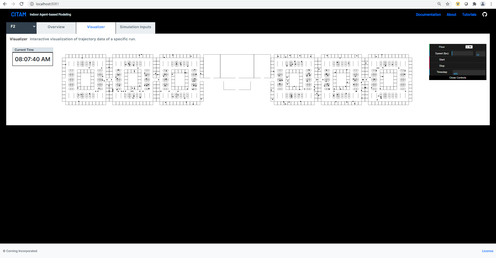

Visualize Results¶
Simulation results can be visualized using a rudimentary dashboard.
There are some known issues with the dashboard including speed issues when visualizing large trajectory files.
To start the dashboard:
$ citam dash
Please note that if the CITAM_RESULT_PATH environment variable is not set, the –result option must be provided to use the dashboard.
$ citam dash --results .
To visualize more than 1 simulation result with the dashboard, set the CITAM_RESULT_PATH as a parent directory from which all results subdirectories are accessible.
To set your environment variable, a quick web search should provide instructions on how to do it on your machine. For more customization options, please see the global configuration page.
The Main Results Page¶
The dashboard displays a list all of the simulations found in the specified results location along with floor level information in tabular format. The table lists all the details extracted from manifest.json file. To view data for a given simulation, click on View Details.
The table contains the following data for each simulation:
Column |
|---|
TimestepInSec |
NumberOfFloors |
NumberOfOneWayAisles |
NumberOfEmployees |
SimulationName |
SimulationID |
Campus |
FacilityOccupancy |
MaxRoomOccupancy |
NumberOfShifts |
NumberOfEntrances |
NumberOfExits |
EntranceScreening |
Developer Note: These data are read from the manifest.json file by the get_manifest API endpoint.
The Details Page¶
This details page has two tabs: Summary and Visualizer.
The Summary Tab¶
The summary tab show key statistics in a “cards” on top of the page about the simulation results and a few plots to give more details.
- Statistics cards comprise of following information:
Overall Total Contact Duration
Average Number of Contacts Per Agent
Average Contact Duration Per Agent
Average Number of People Per Agent
- Charts are provided for:
Per Agent Total Contact and Average Contact Duration scatterplot
Total Contact per Agent histogram
Average Contact Duration (minutes) histogram
It also show a floorplan-based heatmap showing hotspot (where most contact events take place).


The Visualizer Tab¶
The visualization offers an interactive way to explore the time-dependent contact data and trajectories of each agent. The page has a colorbar to denote the number of contacts of each agent. An agent with higher number of contact will be represented with a darker shade of red.
